Rilevamento degli Oggetti
Introduzione
Sulla base della nostra esplorazione della classificazione delle immagini, ora rivolgiamo la nostra attenzione a un’attività di visione artificiale più avanzata: il rilevamento degli oggetti. Mentre la classificazione delle immagini assegna una singola etichetta a un’intera immagine, il rilevamento degli oggetti va oltre identificando e localizzando più oggetti all’interno di una singola immagine. Questa capacità apre molte nuove applicazioni e sfide, in particolare nell’edge computing e nei dispositivi IoT come Raspberry Pi.
Il rilevamento degli oggetti combina le attività di classificazione e localizzazione. Non solo determina quali oggetti sono presenti in un’immagine, ma individua anche le loro posizioni, ad esempio disegnando riquadri di delimitazione attorno a essi. Questa complessità aggiunta rende il rilevamento degli oggetti uno strumento più potente per comprendere le scene visive, ma richiede anche modelli e tecniche di training più sofisticati.
Nell’IA edge, dove lavoriamo con risorse computazionali limitate, l’implementazione di modelli di rilevamento degli oggetti efficienti diventa cruciale. Le sfide che abbiamo affrontato con la classificazione delle immagini, ovvero bilanciare le dimensioni del modello, la velocità di inferenza e l’accuratezza, sono amplificate nel rilevamento degli oggetti. Tuttavia, i vantaggi sono anche più significativi, poiché il rilevamento degli oggetti consente un’analisi dei dati visivi più sfumata e dettagliata.
Alcune applicazioni del rilevamento di oggetti su dispositivi edge includono:
- Sistemi di sorveglianza e sicurezza
- Veicoli autonomi e droni
- Controllo industriale della qualità
- Monitoraggio della fauna selvatica
- Applicazioni di realtà aumentata
Mettendo le mani nel rilevamento di oggetti, ci baseremo sui concetti e sulle tecniche esplorate nella classificazione delle immagini. Esamineremo le architetture di rilevamento di oggetti più diffuse progettate per l’efficienza, come:
- “Single Stage Detectors” [Rilevatori a stadio singolo], come MobileNet ed EfficientDet,
- FOMO (Faster Objects, More Objects), e
- YOLO (You Only Look Once).
Per saperne di più sui modelli di rilevamento di oggetti, seguire il tutorial A Gentle Introduction to Object Recognition With Deep Learning.
Esploreremo quei modelli di rilevamento di oggetti utilizzando
- TensorFlow Lite Runtime (ora modificato in LiteRT),
- Edge Impulse Linux Python SDK e
- Ultralitics
In questo laboratorio, tratteremo i fondamenti del rilevamento degli oggetti e le sue differenze rispetto alla classificazione delle immagini. Impareremo anche come addestrare, mettere a punto, testare, ottimizzare e distribuire le architetture di rilevamento degli oggetti più diffuse utilizzando un dataset creato da zero.
Fondamenti dell’Object Detection
Il rilevamento degli oggetti si basa sulle fondamenta della classificazione delle immagini, ma ne amplia notevolmente le capacità. Per comprendere il rilevamento degli oggetti, è fondamentale innanzitutto riconoscere le sue principali differenze rispetto alla classificazione delle immagini:
Classificazione delle Immagini vs. Rilevamento degli Oggetti
Classificazione delle Immagini:
- Assegna una singola etichetta a un’intera immagine
- Risponde alla domanda: “Qual è l’oggetto o la scena principale di questa immagine?”
- Genera una singola previsione di classe per l’intera immagine
Rilevamento degli oggetti:
- Identifica e individua più oggetti all’interno di un’immagine
- Risponde alle domande: “Quali oggetti sono presenti in questa immagine e dove si trovano?”
- Genera più previsioni, ciascuna composta da un’etichetta di classe e un riquadro di delimitazione
Per visualizzare questa differenza, prendiamo in considerazione un esempio: 
Questo diagramma illustra la differenza critica: la classificazione delle immagini fornisce un’unica etichetta per l’intera immagine, mentre il rilevamento degli oggetti identifica più oggetti, le loro classi e le loro posizioni all’interno dell’immagine.
Componenti Chiave del Rilevamento degli Oggetti
I sistemi di rilevamento degli oggetti sono in genere costituiti da due componenti principali:
Localizzazione degli Oggetti: Questo componente identifica dove si trovano gli oggetti nell’immagine. In genere genera riquadri di delimitazione, regioni rettangolari che racchiudono ogni oggetto rilevato.
Classificazione degli Oggetti: Questo componente determina la classe o la categoria di ogni oggetto rilevato, in modo simile alla classificazione delle immagini ma applicato a ogni regione localizzata.
Sfide nel Rilevamento degli Oggetti
Il rilevamento degli oggetti presenta diverse sfide oltre a quelle della classificazione delle immagini:
- Oggetti multipli: Un’immagine può contenere più oggetti di varie classi, dimensioni e posizioni.
- Scale variabili: Gli oggetti possono apparire a diverse dimensioni all’interno dell’immagine.
- Occlusione: Gli oggetti possono essere parzialmente nascosti o sovrapposti.
- Disordine di sfondo: Distinguere gli oggetti da sfondi complessi può essere difficile.
- Prestazioni in tempo reale: Molte applicazioni richiedono tempi di inferenza rapidi, soprattutto su dispositivi edge.
Approcci al Rilevamento di Oggetti
Esistono due approcci principali al rilevamento di oggetti:
Rilevatori a due stadi: Prima propongono le regioni di interesse e poi classificano ciascuna regione. Esempi includono R-CNN e le sue varianti (Fast R-CNN, Faster R-CNN).
Rilevatori a stadio singolo: Questi prevedono bounding box (o centroidi) e probabilità di classe in un passaggio “forward” [in avanti] della rete. Esempi includono YOLO (You Only Look Once), EfficientDet, SSD (Single Shot Detector) e FOMO (Faster Objects, More Objects). Questi sono spesso più veloci e più adatti per dispositivi edge come Raspberry Pi.
Metriche di Valutazione
Il rilevamento degli oggetti utilizza metriche diverse rispetto alla classificazione delle immagini:
- Intersection over Union (IoU): Misura la sovrapposizione tra bounding box previsti e “ground truth” [reali].
- Mean Average Precision (mAP): Combina precisione e richiamo in tutte le classi e soglie IoU.
- Frames Per Second (FPS): Misura la velocità di rilevamento, fondamentale per le applicazioni in tempo reale su dispositivi edge.
Panoramica dei Modelli di Rilevamento degli Oggetti Pre-Addestrati
Come abbiamo visto nell’introduzione, data un’immagine o un flusso video, un modello di rilevamento degli oggetti può identificare quale, di un set noto di oggetti, potrebbe essere presente e fornire informazioni sulle loro posizioni all’interno dell’immagine.
Si possono testare alcuni modelli comuni online visitando Object Detection - MediaPipe Studio
Su Kaggle, possiamo trovare i modelli tflite pre-addestrati più comuni da usare con Raspi, ssd_mobilenet_v1 e EfficientDet. Quei modelli sono stati addestrati sul dataset COCO (Common Objects in Context), con oltre 200.000 immagini etichettate in 91 categorie. Scaricare i modelli e caricali nella cartella ./models in Raspi.
In alternativa, si possono trovare i modelli e le etichette COCO su GitHub.
Per la prima parte di questo laboratorio, ci concentreremo su un modello SSD-Mobilenet V1 300x300 pre-addestrato e lo confronteremo con EfficientDet-lite0 320x320, anch’esso addestrato utilizzando il set di dati COCO 2017. Entrambi i modelli sono stati convertiti in un formato TensorFlow Lite (4,2 MB per SSD Mobilenet e 4,6 MB per EfficientDet).
SSD-Mobilenet V2 o V3 è consigliato per progetti di “transfer learning”, ma una volta che il modello TFLite V1 sarà disponibile al pubblico, lo useremo per questa panoramica.

Impostazione dell’Ambiente TFLite
Dovremmo confermare i passaggi eseguiti nell’ultimo laboratorio pratico, Image Classification, come segue:
Aggiornamento di Raspberry Pi
Installazione delle Librerie Richieste
Impostazione di un Ambiente Virtuale (Facoltativo ma Consigliato)
source ~/tflite/bin/activateInstallazione di TensorFlow Lite Runtime
Installazione di Additional Python Libraries (all’interno dell’ambiente)
Creazione di una Directory di Lavoro:
Considerando che abbiamo creato la cartella Documents/TFLITE nell’ultimo Lab, creiamo ora le cartelle specifiche per questo lab di rilevamento degli oggetti:
cd Documents/TFLITE/
mkdir OBJ_DETECT
cd OBJ_DETECT
mkdir images
mkdir models
cd modelsInferenza e Post-Elaborazione
Apriamo un nuovo notebook per seguire tutti i passaggi per rilevare oggetti su un’immagine:
Importare le librerie necessarie:
import time
import numpy as np
import matplotlib.pyplot as plt
from PIL import Image
import tflite_runtime.interpreter as tfliteCaricare il modello TFLite e allocare i tensori:
model_path = "./models/ssd-mobilenet-v1-tflite-default-v1.tflite"
interpreter = tflite.Interpreter(model_path=model_path)
interpreter.allocate_tensors()Ottenere i tensori di input e output.
input_details = interpreter.get_input_details()
output_details = interpreter.get_output_details()Input details ci informeranno su come il modello dovrebbe essere alimentato con un’immagine. La forma di (1, 300, 300, 3) con un dtype di uint8 ci dice che un’immagine non normalizzata (intervallo di valori pixel da 0 a 255) con dimensioni (300x300x3) dovrebbe essere inserita una alla volta (Batch Dimension: 1).
Gli output details includono non solo le etichette (“classes”) e le probabilità (“scores”), ma anche la posizione relativa della finestra dei bounding box (“box”) su dove si trova l’oggetto nell’immagine e il numero di oggetti rilevati (“num_detections”). I dettagli di output ci dicono anche che il modello può rilevare un massimo di 10 oggetti nell’immagine.

Quindi, per l’esempio precedente, utilizzando la stessa immagine di gatto utilizzata col Lab di Classificazione Immagine alla ricerca dell’output, abbiamo una probabilità del 76% di aver trovato un oggetto con un ID classe di 16 su un’area delimitata da un bounding box di [0.028011084, 0.020121813, 0.9886069, 0.802299]. Questi quattro numeri sono correlati a ymin, xmin, ymax e xmax, le coordinate del box.
Considerando che y va dall’alto (ymin) al basso (ymax) e x va da sinistra (xmin) a destra (xmax), abbiamo, di fatto, le coordinate dell’angolo superiore/sinistro e di quello inferiore/destro. Con entrambi i bordi e conoscendo la forma dell’immagine, è possibile disegnare un rettangolo attorno all’oggetto, come mostrato nella figura sottostante:

Successivamente, dovremmo scoprire cosa significa un ID di classe uguale a 16. Aprendo il file coco_labels.txt, come un elenco, ogni elemento ha un indice associato e ispezionando l’indice 16, otteniamo, come previsto, cat. La probabilità è il valore restituito dal punteggio.
Carichiamo ora alcune immagini con più oggetti su di esse per il test.
img_path = "./images/cat_dog.jpeg"
orig_img = Image.open(img_path)
# Display the image
plt.figure(figsize=(8, 8))
plt.imshow(orig_img)
plt.title("Original Image")
plt.show()
In base ai dettagli di input, pre-elaboriamo l’immagine, modificandone la forma ed espandendone le dimensioni:
img = orig_img.resize((input_details[0]['shape'][1],
input_details[0]['shape'][2]))
input_data = np.expand_dims(img, axis=0)
input_data.shape, input_data.dtypeLa nuova forma input_data è(1, 300, 300, 3) con un dtype di uint8, che è compatibile con quanto previsto dal modello.
Utilizzando input_data, eseguiamo l’interprete, misuriamo la latenza e otteniamo l’output:
start_time = time.time()
interpreter.set_tensor(input_details[0]['index'], input_data)
interpreter.invoke()
end_time = time.time()
inference_time = (end_time - start_time) * 1000 # Convert to milliseconds
print ("Inference time: {:.1f}ms".format(inference_time))Con una latenza di circa 800 ms, possiamo ottenere 4 output distinti:
boxes = interpreter.get_tensor(output_details[0]['index'])[0]
classes = interpreter.get_tensor(output_details[1]['index'])[0]
scores = interpreter.get_tensor(output_details[2]['index'])[0]
num_detections = int(interpreter.get_tensor(output_details[3]['index'])[0])Da una rapida occhiata, possiamo vedere che il modello ha rilevato 2 oggetti con un punteggio superiore a 0,5:
for i in range(num_detections):
if scores[i] > 0.5: # Confidence threshold
print(f"Object {i}:")
print(f" Bounding Box: {boxes[i]}")
print(f" Confidence: {scores[i]}")
print(f" Class: {classes[i]}")E possiamo anche visualizzare i risultati:
plt.figure(figsize=(12, 8))
plt.imshow(orig_img)
for i in range(num_detections):
if scores[i] > 0.5: # Adjust threshold as needed
ymin, xmin, ymax, xmax = boxes[i]
(left, right, top, bottom) = (xmin * orig_img.width,
xmax * orig_img.width,
ymin * orig_img.height,
ymax * orig_img.height)
rect = plt.Rectangle((left, top), right-left, bottom-top,
fill=False, color='red', linewidth=2)
plt.gca().add_patch(rect)
class_id = int(classes[i])
class_name = labels[class_id]
plt.text(left, top-10, f'{class_name}: {scores[i]:.2f}',
color='red', fontsize=12, backgroundcolor='white')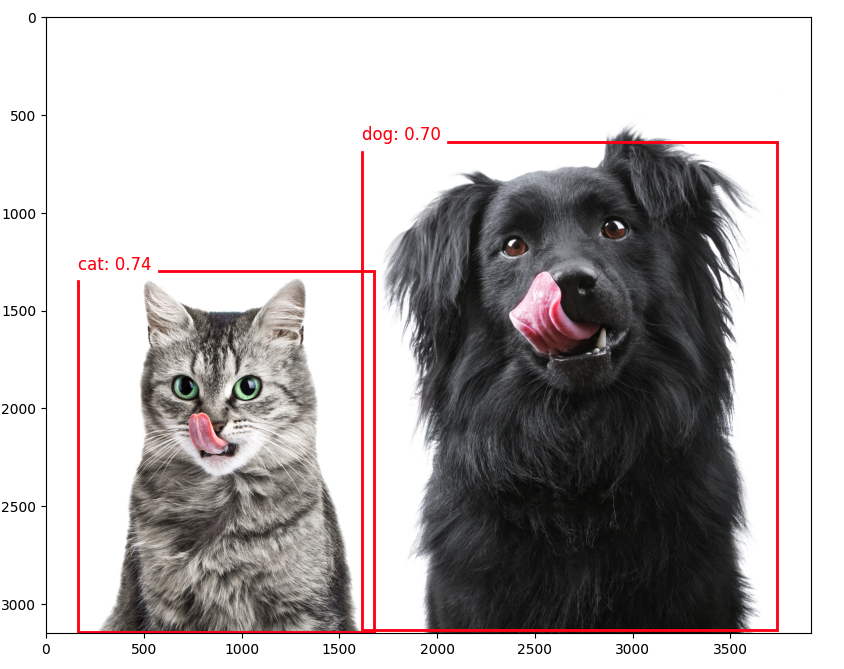
EfficientDet
EfficientDet non è tecnicamente un modello SSD (Single Shot Detector), ma condivide alcune somiglianze e si basa su idee provenienti da SSD e altre architetture di rilevamento degli oggetti:
- EfficientDet:
- Sviluppato dai ricercatori di Google nel 2019
- Utilizza EfficientNet come rete backbone
- Utilizza una nuova “bi-directional feature pyramid network (BiFPN)” [rete piramidale di feature bidirezionale]
- Utilizza il ridimensionamento composto per ridimensionare in modo efficiente la rete backbone e i componenti di rilevamento degli oggetti.
- Somiglianze con SSD:
- Entrambi sono rilevatori a stadio singolo, il che significa che eseguono la localizzazione e la classificazione degli oggetti in un singolo passaggio “forward” [in avanti].
- Entrambi utilizzano mappe di feature multiscala per rilevare oggetti a diverse scale.
- Differenze principali:
- Backbone: SSD in genere utilizza VGG o MobileNet, mentre EfficientDet utilizza EfficientNet.
- Fusione di funzionalità: SSD utilizza una semplice piramide di funzionalità, mentre EfficientDet utilizza il più avanzato BiFPN.
- Metodo di ridimensionamento: EfficientDet introduce il ridimensionamento composto per tutti i componenti della rete
- Vantaggi di EfficientDet:
- In genere, raggiunge migliori compromessi tra accuratezza ed efficienza rispetto a SSD e molti altri modelli di rilevamento di oggetti.
- Un ridimensionamento più flessibile consente una famiglia di modelli con diversi compromessi tra dimensioni e prestazioni.
Sebbene EfficientDet non sia un modello SSD, può essere visto come un’evoluzione delle architetture di rilevamento a fase singola, che incorpora tecniche più avanzate per migliorare efficienza e precisione. Quando si utilizza EfficientDet, possiamo aspettarci strutture di output simili a SSD (ad esempio, bounding box e punteggi di classe).
Su GitHub, si trova un altro notebook che esplora il modello EfficientDet che abbiamo realizzato con SSD MobileNet.
Progetto di Rilevamento di Oggetti
Ora, svilupperemo un progetto completo di classificazione delle immagini dalla raccolta dei dati all’addestramento e all’implementazione. Come abbiamo fatto con il progetto di classificazione delle immagini, il modello addestrato e convertito verrà utilizzato per l’inferenza.
Utilizzeremo lo stesso set di dati per addestrare 3 modelli: SSD-MobileNet V2, FOMO e YOLO.
L’Obiettivo
Tutti i progetti di Machine Learning devono iniziare con un obiettivo. Supponiamo di trovarci in una struttura industriale e di dover ordinare e contare ruote e scatole speciali.

In altre parole, dovremmo eseguire una classificazione multi-etichetta, in cui ogni immagine può avere tre classi:
Background (nessun oggetto)
Box [Scatola]
Wheel [Ruota]
Raccolta Dati Grezzi
Una volta definito l’obiettivo del nostro progetto di apprendimento automatico, il passaggio successivo, e più cruciale, è la raccolta del dataset. Possiamo utilizzare un telefono, il Raspi o un mix per creare il set di dati grezzi (senza etichette). Usiamo la semplice app Web sul nostro Raspberry Pi per visualizzare le immagini QVGA (320 x 240) catturate in un browser.
Da GitHub, si prende lo script Python get_img_data.py e lo si apre nel terminale:
python3 get_img_data.pyAccedere all’interfaccia web:
- Sul Raspberry Pi stesso (se si ha una GUI): si apre un browser web e si va su
http://localhost:5000 - Da un altro dispositivo sulla stessa rete: aprire un browser web e andare su
http://<raspberry_pi_ip>:5000(Sostituire<raspberry_pi_ip>con l’indirizzo IP del Raspberry Pi). Per esempio:http://192.168.4.210:5000/
 Lo script Python crea un’interfaccia basata sul Web per catturare e organizzare set di dati di immagini utilizzando un Raspberry Pi e la sua fotocamera. È utile per progetti di apprendimento automatico che richiedono dati di immagini etichettati o meno, come nel nostro caso.
Lo script Python crea un’interfaccia basata sul Web per catturare e organizzare set di dati di immagini utilizzando un Raspberry Pi e la sua fotocamera. È utile per progetti di apprendimento automatico che richiedono dati di immagini etichettati o meno, come nel nostro caso.
Accedere all’interfaccia Web da un browser, inserire un’etichetta generica per le immagini da catturare e premere Start Capture.
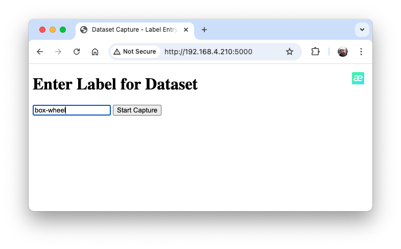
Notare che le immagini da catturare avranno più etichette che dovranno essere definite in seguito.
Utilizzare l’anteprima live per posizionare la fotocamera e cliccare su Capture Image per salvare le immagini sotto l’etichetta corrente (in questo caso, box-wheel.
Quando abbiamo abbastanza immagini, possiamo premere Stop Capture. Le immagini catturate vengono salvate nella cartella dataset/box-wheel:
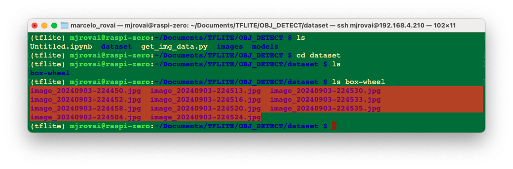
Acquisire circa 60 immagini. Provare ad acquisire con diverse angolazioni, sfondi e condizioni di luce. Filezilla può trasferire il dataset raw creato sul computer principale.
Etichettatura dei Dati
Il passaggio successivo in un progetto di Object Detect è creare un dataset etichettato. Dovremmo etichettare le immagini del dataset raw, creando riquadri di delimitazione attorno agli oggetti di ogni immagine (box e ruota). Possiamo usare strumenti di etichettatura come LabelImg, CVAT, Roboflow, o persino Edge Impulse Studio. Dopo aver esplorato lo strumento Edge Impulse in altri laboratori, usiamo Roboflow qui.
Stiamo usando Roboflow (versione gratuita) qui per due motivi principali. 1) Possiamo avere un auto-labeler e 2) Il dataset annotato è disponibile in diversi formati e può essere utilizzato sia su Edge Impulse Studio (lo useremo per MobileNet V2 e FOMO train) sia su CoLab (YOLOv8 train), ad esempio. Avendo il dataset annotato su Edge Impulse (account gratuito), non è possibile utilizzarlo per il training su altre piattaforme.
Dovremmo caricare il dataset grezzo su Roboflow. Creare un account gratuito lì e avviare un nuovo progetto, ad esempio (“box-versus-wheel”).

Non entreremo nei dettagli del processo Roboflow dato che sono disponibili molti tutorial.
Annotazione
Una volta creato il progetto e caricato il dataset, si devono effettuare le annotazioni utilizzando lo strumento “Auto-Label”. Notare che si può anche caricare immagini con solo uno sfondo, che dovrebbero essere salvate senza annotazioni.
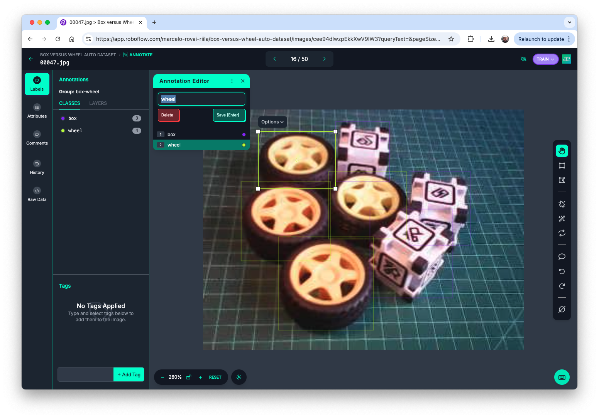
Una volta annotate tutte le immagini, si devono dividere in training, validation e testing.

Pre-elaborazione dei Dati
L’ultimo passaggio con il dataset è la pre-elaborazione per generare una versione finale per il training. Ridimensioniamo tutte le immagini a 320x320 e generiamo versioni aumentate di ogni immagine (augmentation) per creare nuovi esempi di training da cui il nostro modello può imparare.
Per l’augmentation, ruoteremo le immagini (+/-15o), ritaglieremo e varieremo la luminosità e l’esposizione.
Alla fine del processo avremo 153 immagini.

Ora si deve esportare il dataset annotato in un formato che Edge Impulse, Ultralitics e altri framework/strumenti possano comprendere, ad esempio YOLOv8. Scarichiamo una versione compressa del dataset sul nostro desktop.

Qui è possibile rivedere come è stato strutturato il dataset

Ci sono 3 cartelle separate, una per ogni suddivisione (train/test/valid). Per ognuna di esse ci sono 2 sottocartelle, images e labels. Le immagini sono archiviate come image_id.jpg e images_id.txt, dove “image_id” è univoco per ogni immagine.
Il formato del file delle etichette sarà class_id coordinate del riquadro di delimitazione, dove nel nostro caso class_id sarà 0 per box e 1 per wheel. L’ID numerico (o, 1, 2…) seguirà l’ordine alfabetico del nome della classe.
Il file data.yaml contiene informazioni sul set di dati come i nomi delle classi (names: ['box', 'wheel']) seguendo il formato YOLO.
E questo è tutto! Siamo pronti per iniziare l’addestramento utilizzando Edge Impulse Studio (come faremo nel passaggio successivo), Ultralytics (come faremo quando discuteremo di YOLO) o persino l’addestramento da zero su CoLab (come abbiamo fatto col dataset Cifar-10 nel laboratorio di classificazione delle immagini).
Il dataset pre-elaborato si trova sul sito Roboflow, o qui:

Addestramento di un Modello SSD MobileNet su Edge Impulse Studio
Si va su Edge Impulse Studio, si inseriscono le proprie credenziali in Login (o si crea un account) e si avvia un nuovo progetto.
Qui, è possibile clonare il progetto sviluppato per questo laboratorio pratico: Raspi - Object Detection.
Nella scheda Dashboard del progetto, si va in basso e su Project info e per “Labeling method” si seleziona Bounding boxes (object detection)
Caricamento dei dati annotati
Su Studio, si va alla scheda Data acquisition e nella sezione UPLOAD DATA si carica dal computer il set di dati non elaborato.
Possiamo usare l’opzione Select a folder, scegliendo, ad esempio, la cartella train nel computer, che contiene due sottocartelle, images e labels. Selezionare Image label format, “YOLO TXT”, caricare nella categoria Training e premere Upload data.
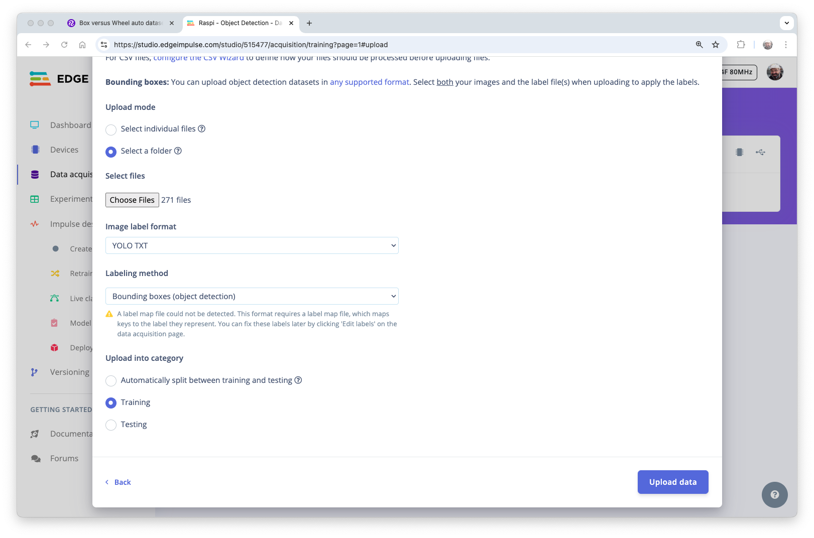
Ripetere il processo per i dati di test (caricare entrambe le cartelle, test e convalida). Alla fine del processo di caricamento, si ottiene il set di dati annotato di 153 immagini suddivise in train/test (84%/16%).
Notare che le etichette saranno archiviate nei file di etichette
0e1, che sono equivalenti aboxewheel.
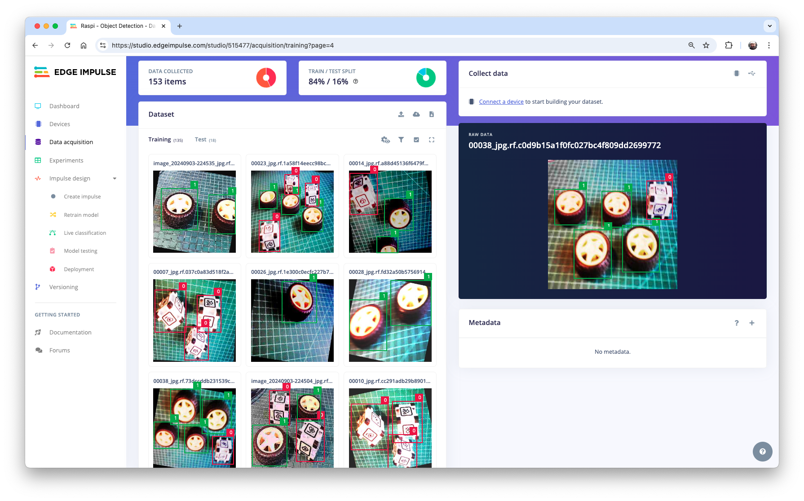
Impulse Design
La prima cosa da definire quando entriamo nella fase Create impulse è descrivere il dispositivo target per la distribuzione. Apparirà una finestra pop-up. Selezioneremo Raspberry 4, un dispositivo intermedio tra Raspi-Zero e Raspi-5.
Questa scelta non interferirà con l’addestramento; ci darà solo un’idea della latenza del modello su quel target specifico.

In questa fase, si deve definire come:
Il pre-processing consiste nel ridimensionare le singole immagini. Nel nostro caso, le immagini sono state pre-elaborate su Roboflow, a
320x320, quindi teniamole. La modifica delle dimensioni non avrà importanza qui perché le immagini sono già quadrate. Se si carica un’immagine rettangolare, la si deve schiacciare (forma quadrata, senza ritagliarla). In seguito, si potrebbe definire se le immagini vengono convertite da RGB a scala di grigi o meno.Design a Model, in questo caso, “Object Detection”.

Pre-elaborazione di tutti i dataset
Nella sezione Image, selezionare Color depth come RGB e premere Save parameters.
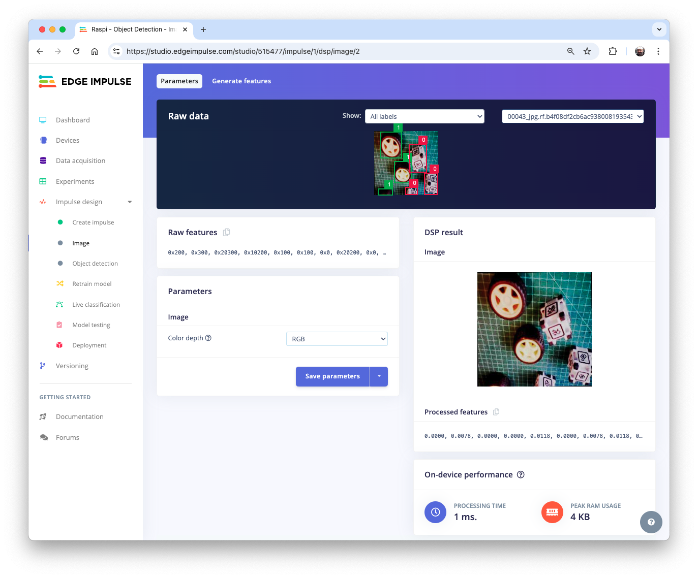
Lo Studio passa automaticamente alla sezione successiva, Generate features, dove tutti i campioni verranno pre-elaborati, ottenendo 480 oggetti: 207 box e 273 ruote.
L’esploratore di feature mostra che tutti i campioni evidenziano una buona separazione dopo la generazione delle feature.
Progettazione, Addestramento e Test del Modello
Per l’addestramento, dovremmo selezionare un modello pre-addestrato. Usiamo MobileNetV2 SSD FPN-Lite (solo 320x320) . È un modello di rilevamento oggetti pre-addestrato progettato per individuare fino a 10 oggetti all’interno di un’immagine, generando un riquadro di delimitazione per ogni oggetto rilevato. Il modello è di circa 3,7 MB. Supporta un input RGB a 320x320px.
Per quanto riguarda gli iperparametri di training, il modello verrà addestrato con:
- Epochs: 25
- Batch size: 32
- Learning Rate: 0.15.
Per la convalida durante l’addestramento, il 20% del set di dati (validation_dataset) verrà risparmiato.
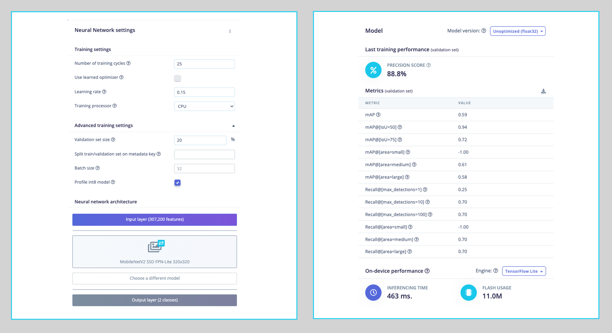
Di conseguenza, il modello termina con un punteggio di precisione complessivo (basato su COCO mAP) dell’88,8%, superiore al risultato ottenuto utilizzando i dati di test (83,3%).
Distribuzione del modello
Abbiamo due modi per distribuire il modello:
- Modello TFLite, che consente di distribuire il modello addestrato come
.tfliteaffinché Raspi lo esegua tramite Python. - Linux (AARCH64), un binario per Linux (AARCH64), implementa il protocollo Edge Impulse Linux, che consente di eseguire i modelli su qualsiasi scheda di sviluppo basata su Linux, ad esempio con SDK per Python. Consulta la documentazione per maggiori informazioni e le istruzioni di configurazione.
Distribuiamo il modello TFLite. Nella scheda Dashboard, si va su Transfer learning model (int8 quantized) e si clicca sull’icona di download:
Trasferire il modello dal computer alla cartella Raspi ./models e catturare o ottenere alcune immagini per l’inferenza e salvale nella cartella ./images.
Inferenza e Post-Elaborazione
L’inferenza può essere fatta come discusso nella Panoramica dei Modelli di Rilevamento degli Oggetti Pre-Addestrati. Iniziamo un nuovo notebook per seguire tutti i passaggi per rilevare cubi e ruote su un’immagine.
Importare le librerie necessarie:
import time
import numpy as np
import matplotlib.pyplot as plt
import matplotlib.patches as patches
from PIL import Image
import tflite_runtime.interpreter as tfliteDefinire il percorso del modello e delle etichette:
model_path = "./models/ei-raspi-object-detection-SSD-MobileNetv2-320x0320-\
int8.lite"
labels = ['box', 'wheel']Ricordare che il modello restituirà l’ID della classe come valori (0 e 1), seguendo un ordine alfabetico in base ai nomi delle classi.
Caricare il modello, allocare i tensori e ottenere i dettagli dei tensori di input e output:
# Load the TFLite model
interpreter = tflite.Interpreter(model_path=model_path)
interpreter.allocate_tensors()
# Get input and output tensors
input_details = interpreter.get_input_details()
output_details = interpreter.get_output_details()Una differenza fondamentale da notare è che il dtype dei dettagli di input del modello è ora int8, il che significa che i valori di input vanno da -128 a +127, mentre ogni pixel della nostra immagine raw va da 0 a 256. Ciò significa che dovremmo pre-elaborare l’immagine per farla corrispondere. Possiamo controllare qui:
input_dtype = input_details[0]['dtype']
input_dtypenumpy.int8Quindi, apriamo l’immagine e mostriamola:
# Load the image
img_path = "./images/box_2_wheel_2.jpg"
orig_img = Image.open(img_path)
# Display the image
plt.figure(figsize=(6, 6))
plt.imshow(orig_img)
plt.title("Original Image")
plt.show()
Ed eseguiamo la pre-elaborazione:
scale, zero_point = input_details[0]['quantization']
img = orig_img.resize((input_details[0]['shape'][1],
input_details[0]['shape'][2]))
img_array = np.array(img, dtype=np.float32) / 255.0
img_array = (img_array / scale + zero_point).clip(-128, 127).astype(np.int8)
input_data = np.expand_dims(img_array, axis=0)Controllando i dati di input, possiamo verificare che il tensore di input è compatibile con quanto previsto dal modello:
input_data.shape, input_data.dtype((1, 320, 320, 3), dtype('int8'))Adesso è il momento di effettuare l’inferenza. Calcoliamo anche la latenza del modello:
# Inference on Raspi-Zero
start_time = time.time()
interpreter.set_tensor(input_details[0]['index'], input_data)
interpreter.invoke()
end_time = time.time()
inference_time = (end_time - start_time) * 1000 # Convert to milliseconds
print ("Inference time: {:.1f}ms".format(inference_time))Il modello impiegherà circa 600 ms per eseguire l’inferenza nel Raspi-Zero, che è circa 5 volte più lungo di un Raspi-5.
Ora possiamo ottenere le classi di output degli oggetti rilevati, le coordinate dei suoi bounding box e le probabilità.
boxes = interpreter.get_tensor(output_details[1]['index'])[0]
classes = interpreter.get_tensor(output_details[3]['index'])[0]
scores = interpreter.get_tensor(output_details[0]['index'])[0]
num_detections = int(interpreter.get_tensor(output_details[2]['index'])[0])for i in range(num_detections):
if scores[i] > 0.5: # Confidence threshold
print(f"Object {i}:")
print(f" Bounding Box: {boxes[i]}")
print(f" Confidence: {scores[i]}")
print(f" Class: {classes[i]}")
Dai risultati, possiamo vedere che sono stati rilevati 4 oggetti: due con ID classe 0 (box) e due con ID classe 1 (wheel), cosa è corretto!
Visualizziamo il risultato per un threshold [soglia] di 0,5
threshold = 0.5
plt.figure(figsize=(6,6))
plt.imshow(orig_img)
for i in range(num_detections):
if scores[i] > threshold:
ymin, xmin, ymax, xmax = boxes[i]
(left, right, top, bottom) = (xmin * orig_img.width,
xmax * orig_img.width,
ymin * orig_img.height,
ymax * orig_img.height)
rect = plt.Rectangle((left, top), right-left, bottom-top,
fill=False, color='red', linewidth=2)
plt.gca().add_patch(rect)
class_id = int(classes[i])
class_name = labels[class_id]
plt.text(left, top-10, f'{class_name}: {scores[i]:.2f}',
color='red', fontsize=12, backgroundcolor='white')
Ma cosa succede se riduciamo la soglia a 0.3, ad esempio?
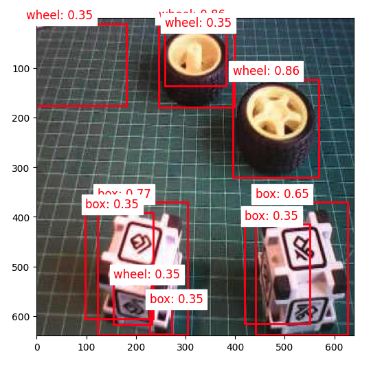
Cominciamo a vedere falsi positivi e rilevazioni multiple, in cui il modello rileva lo stesso oggetto più volte con diversi livelli di confidenza e bounding box leggermente diversi.
Di solito, a volte, dobbiamo regolare la soglia su valori più piccoli per catturare tutti gli oggetti, evitando falsi negativi, che porterebbero a rilevazioni multiple.
Per migliorare i risultati di rilevamento, dovremmo implementare Non-Maximum Suppression (NMS), che aiuta a eliminare le bounding box sovrapposte e mantiene solo il rilevamento più affidabile.
Per questo, creiamo una funzione generale denominata non_max_suppression(), con il ruolo di perfezionare i risultati di rilevamento degli oggetti eliminando le bounding box ridondanti e sovrapposte. Ciò è possibile selezionando in modo iterativo la rilevazione con il punteggio di confidenza più elevato e rimuovendo altre rilevazioni significativamente sovrapposte in base a una soglia di “Intersection over Union (IoU)” [intersezione su unione].
def non_max_suppression(boxes, scores, threshold):
# Convert to corner coordinates
x1 = boxes[:, 0]
y1 = boxes[:, 1]
x2 = boxes[:, 2]
y2 = boxes[:, 3]
areas = (x2 - x1 + 1) * (y2 - y1 + 1)
order = scores.argsort()[::-1]
keep = []
while order.size > 0:
i = order[0]
keep.append(i)
xx1 = np.maximum(x1[i], x1[order[1:]])
yy1 = np.maximum(y1[i], y1[order[1:]])
xx2 = np.minimum(x2[i], x2[order[1:]])
yy2 = np.minimum(y2[i], y2[order[1:]])
w = np.maximum(0.0, xx2 - xx1 + 1)
h = np.maximum(0.0, yy2 - yy1 + 1)
inter = w * h
ovr = inter / (areas[i] + areas[order[1:]] - inter)
inds = np.where(ovr <= threshold)[0]
order = order[inds + 1]
return keepCome funziona:
Sorting: Inizia ordinando tutte le rilevazioni in base ai loro punteggi di confidenza, dal più alto al più basso.
Selection: Seleziona la casella con il punteggio più alto e la aggiunge all’elenco finale delle rilevazioni.
Comparison: Questa casella selezionata viene confrontata con tutte le restanti caselle con punteggio più basso.
Elimination: Qualsiasi casella che si sovrapponga in modo significativo (oltre la soglia IoU) alla casella selezionata viene eliminata.
Iteration: Questo processo si ripete con la casella con il punteggio più alto successivo finché tutte le caselle non vengono elaborate.
Ora, possiamo definire una funzione di visualizzazione più precisa che prenderà in considerazione una soglia IoU, rilevando solo gli oggetti selezionati dalla funzione non_max_suppression:
def visualize_detections(image, boxes, classes, scores,
labels, threshold, iou_threshold):
if isinstance(image, Image.Image):
image_np = np.array(image)
else:
image_np = image
height, width = image_np.shape[:2]
# Convert normalized coordinates to pixel coordinates
boxes_pixel = boxes * np.array([height, width, height, width])
# Apply NMS
keep = non_max_suppression(boxes_pixel, scores, iou_threshold)
# Set the figure size to 12x8 inches
fig, ax = plt.subplots(1, figsize=(12, 8))
ax.imshow(image_np)
for i in keep:
if scores[i] > threshold:
ymin, xmin, ymax, xmax = boxes[i]
rect = patches.Rectangle((xmin * width, ymin * height),
(xmax - xmin) * width,
(ymax - ymin) * height,
linewidth=2, edgecolor='r', facecolor='none')
ax.add_patch(rect)
class_name = labels[int(classes[i])]
ax.text(xmin * width, ymin * height - 10,
f'{class_name}: {scores[i]:.2f}', color='red',
fontsize=12, backgroundcolor='white')
plt.show()Ora possiamo creare una funzione che chiamerà le altre, eseguendo l’inferenza su qualsiasi immagine:
def detect_objects(img_path, conf=0.5, iou=0.5):
orig_img = Image.open(img_path)
scale, zero_point = input_details[0]['quantization']
img = orig_img.resize((input_details[0]['shape'][1],
input_details[0]['shape'][2]))
img_array = np.array(img, dtype=np.float32) / 255.0
img_array = (img_array / scale + zero_point).clip(-128, 127).\
astype(np.int8)
input_data = np.expand_dims(img_array, axis=0)
# Inference on Raspi-Zero
start_time = time.time()
interpreter.set_tensor(input_details[0]['index'], input_data)
interpreter.invoke()
end_time = time.time()
inference_time = (end_time - start_time) * 1000 # Convert to ms
print ("Inference time: {:.1f}ms".format(inference_time))
# Extract the outputs
boxes = interpreter.get_tensor(output_details[1]['index'])[0]
classes = interpreter.get_tensor(output_details[3]['index'])[0]
scores = interpreter.get_tensor(output_details[0]['index'])[0]
num_detections = int(interpreter.get_tensor(output_details[2]['index'])[0])
visualize_detections(orig_img, boxes, classes, scores, labels,
threshold=conf,
iou_threshold=iou)Ora, eseguendo il codice, ottenendo di nuovo la stessa immagine con una soglia di confidenza di 0.3, ma con un piccolo IoU:
img_path = "./images/box_2_wheel_2.jpg"
detect_objects(img_path, conf=0.3,iou=0.05)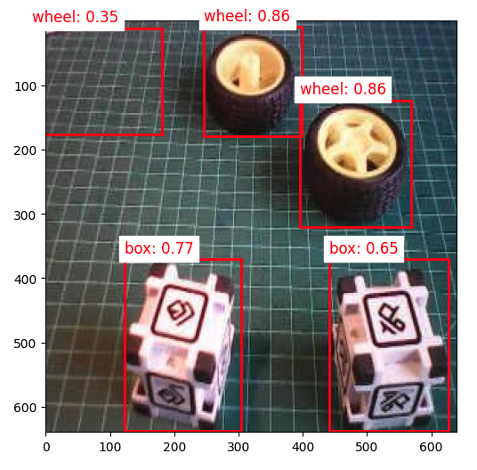
Training di un modello FOMO su Edge Impulse Studio
L’inferenza con il modello SSD MobileNet ha funzionato bene, ma la latenza era significativamente alta. L’inferenza variava da 0.5 a 1.3 secondi su un Raspi-Zero, il che significa circa o meno di 1 FPS (1 frame al secondo). Un’alternativa per accelerare il processo è usare FOMO (Faster Objects, More Objects).
Questo nuovo algoritmo di apprendimento automatico consente di contare più oggetti e di trovare la loro posizione in un’immagine in tempo reale utilizzando fino a 30 volte meno potenza di elaborazione e memoria rispetto a MobileNet SSD o YOLO. Il motivo principale per cui ciò è possibile è che mentre altri modelli calcolano le dimensioni dell’oggetto disegnando un quadrato attorno ad esso (bounding box), FOMO ignora le dimensioni dell’immagine, fornendo solo le informazioni sulla posizione dell’oggetto nell’immagine tramite le sue coordinate del centroide.
Come funziona FOMO?
In una tipica pipeline di rilevamento degli oggetti, la prima fase consiste nell’estrarre le feature dall’immagine di input. FOMO sfrutta MobileNetV2 per eseguire questa attività. MobileNetV2 elabora l’immagine di input per produrre una feature map che cattura le caratteristiche essenziali, come texture, forme e bordi degli oggetti, in modo computazionalmente efficiente.
Una volta estratte queste feature, l’architettura più semplice di FOMO, focalizzata sul rilevamento del punto centrale, interpreta la feature map per determinare dove si trovano gli oggetti nell’immagine. L’output è una griglia di celle, in cui ogni cella rappresenta se è stato rilevato o meno un centro dell’oggetto. Il modello restituisce uno o più punteggi di confidenza per ogni cella, indicando la probabilità che un oggetto sia presente.
Vediamo come funziona su un’immagine.
FOMO divide l’immagine in blocchi di pixel usando un fattore di 8. Per l’input di 96x96, la griglia è 12x12 (96/8=12). Per un 160x160, la griglia sarà 20x20 e così via. Successivamente, FOMO eseguirà un classificatore attraverso ogni blocco di pixel per calcolare la probabilità che ci sia un box o una ruota in ognuno di essi e, successivamente, determinerà le regioni che hanno la più alta probabilità di contenere l’oggetto (se un blocco di pixel non ha oggetti, verrà classificato come background). Dalla sovrapposizione della regione finale, FOMO fornisce le coordinate (relative alle dimensioni dell’immagine) del centroide di questa regione.

Compromesso Tra Velocità e Precisione:
- Risoluzione della Griglia: FOMO utilizza una griglia di risoluzione fissa, il che significa che ogni cella può rilevare se un oggetto è presente in quella parte dell’immagine. Sebbene non fornisca un’elevata precisione di localizzazione, fa un compromesso essendo veloce e computazionalmente leggero, il che è fondamentale per i dispositivi edge.
- Rilevamento Multi-Oggetto: Poiché ogni cella è indipendente, FOMO può rilevare più oggetti contemporaneamente in un’immagine identificando più centri.
Impulse Design, nuovo Training e Test
Tornare a Edge Impulse Studio e nella scheda Experiments, creare un altro impulso. Ora, le immagini di input dovrebbero essere 160x160 (questa è la dimensione di input prevista per MobilenetV2).

Nella scheda Image, generare le feature e spostarsi nella scheda Object detection.
Dovremmo selezionare un modello pre-addestrato per l’addestramento. Usiamo FOMO (Faster Objects, More Objects) MobileNetV2 0.35.
Per quanto riguarda gli iperparametri di training, il modello verrà addestrato con:
- Epochs: 30
- Batch size: 32
- Learning Rate: 0.001.
Per la convalida durante l’addestramento, il 20% del set di dati (validation_dataset) verrà risparmiato. Non applicheremo il “Data Augmentation” per il restante 80% (train_dataset) perché il dataset è già stato aumentato durante la fase di etichettatura su Roboflow.
Di conseguenza, il modello termina con un punteggio F1 complessivo del 93,3% con una latenza impressionante di 8 ms (Raspi-4), circa 60 volte inferiore a quella ottenuta con SSD MovileNetV2.

Notare che FOMO ha aggiunto automaticamente una terza etichetta di background ai due box (0) e ruote (1) definite in precedenza.
Nella scheda Model testing, possiamo vedere che l’accuratezza era del 94%. Ecco uno dei risultati del campione di test:

Nelle attività di rilevamento di oggetti, l’accuratezza non è in genere la metrica di valutazione primaria. Il rilevamento di oggetti comporta la classificazione degli oggetti e la definizione di riquadri di delimitazione attorno a essi, il che lo rende un problema più complesso della semplice classificazione. Il problema è che non abbiamo il riquadro di delimitazione, solo i centroidi. In breve, usare l’accuratezza come metrica potrebbe essere fuorviante e potrebbe non fornire una comprensione completa delle prestazioni del modello.
Distribuzione del modello
Come abbiamo fatto nella sezione precedente, possiamo distribuire il modello addestrato come TFLite o Linux (AARCH64). Ora facciamolo come Linux (AARCH64), un binario che implementa il protocollo Edge Impulse Linux.
Edge Impulse per i modelli Linux viene fornito in formato .eim. Questo eseguibile contiene il nostro “impulso completo” creato in Edge Impulse Studio. L’impulso è costituito dai blocchi di elaborazione del segnale e da qualsiasi blocco di apprendimento e anomalia che abbiamo aggiunto e addestrato. È compilato con ottimizzazioni per il nostro processore o GPU (ad esempio, istruzioni NEON su core ARM), più un semplice layer IPC (su un socket Unix).
Nella scheda Deploy, selezionare l’opzione Linux (AARCH64), il modello int8 e premere Build.

Il modello verrà scaricato automaticamente sul computer.
Sul nostro Raspi, creiamo una nuova area di lavoro:
cd ~
cd Documents
mkdir EI_Linux
cd EI_Linux
mkdir models
mkdir imagesRinominare il modello per facilitarne l’identificazione:
Ad esempio, raspi-object-detection-linux-aarch64-FOMO-int8.eim e trasferirlo nella nuova cartella Raspi ./models e catturare o ottenere alcune immagini per l’inferenza e salvarle nella cartella ./images.
Inferenza e Post-Elaborazione
L’inferenza verrà effettuata utilizzando Linux Python SDK. Questa libreria consente di eseguire modelli di apprendimento automatico e raccogliere dati dei sensori su macchine Linux utilizzando Python. L’SDK è open source e ospitato su GitHub: edgeimpulse/linux-sdk-python.
Impostiamo un ambiente virtuale per lavorare con Linux Python SDK
python3 -m venv ~/eilinux
source ~/eilinux/bin/activateE installare tutte le librerie necessarie:
sudo apt-get update
sudo apt-get install libatlas-base-dev libportaudio0 libportaudio2
sudo apt-get installlibportaudiocpp0 portaudio19-dev
pip3 install edge_impulse_linux -i https://pypi.python.org/simple
pip3 install Pillow matplotlib pyaudio opencv-contrib-python
sudo apt-get install portaudio19-dev
pip3 install pyaudio
pip3 install opencv-contrib-pythonConsentire al modello di essere eseguibile.
chmod +x raspi-object-detection-linux-aarch64-FOMO-int8.eimInstallare Jupiter Notebook nel nuovo ambiente
pip3 install jupyterEseguire un notebook in locale (su Raspi-4 o 5 con desktop)
jupyter notebooko sul browser del computer:
jupyter notebook --ip=192.168.4.210 --no-browserAvviamo un nuovo notebook seguendo tutti i passaggi per rilevare cubi e ruote su un’immagine utilizzando il modello FOMO e l’SDK Python di Edge Impulse Linux.
Importare le librerie necessarie:
import sys, time
import numpy as np
import matplotlib.pyplot as plt
import matplotlib.patches as patches
from PIL import Image
import cv2
from edge_impulse_linux.image import ImageImpulseRunnerDefinire il percorso del modello e delle etichette:
model_file = "raspi-object-detection-linux-aarch64-int8.eim"
model_path = "models/"+ model_file # Trained ML model from Edge Impulse
labels = ['box', 'wheel']Ricordare che il modello restituirà l’ID della classe come valori (0 e 1), seguendo un ordine alfabetico in base ai nomi delle classi.
Caricare e inizializzare il modello:
# Load the model file
runner = ImageImpulseRunner(model_path)
# Initialize model
model_info = runner.init()Il model_info conterrà informazioni critiche sul modello. Tuttavia, a differenza dell’interprete TFLite, la libreria EI Linux Python SDK preparerà ora il modello per l’inferenza.
Quindi, apriamo l’immagine e mostriamola (ora, per compatibilità, useremo OpenCV, la libreria CV utilizzata internamente da EI. OpenCV legge l’immagine come BGR, quindi dovremo convertirla in RGB:
# Load the image
img_path = "./images/1_box_1_wheel.jpg"
orig_img = cv2.imread(img_path)
img_rgb = cv2.cvtColor(orig_img, cv2.COLOR_BGR2RGB)
# Display the image
plt.imshow(img_rgb)
plt.title("Original Image")
plt.show()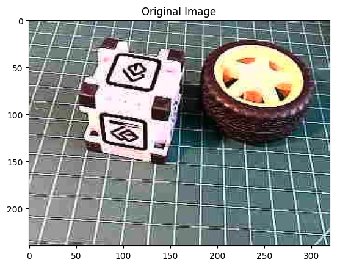
Ora otterremo le feature e l’immagine preelaborata (ritagliata) utilizzando runner:
features, cropped = runner.get_features_from_image_auto_studio_setings(img_rgb)Ed eseguiamo l’inferenza. Calcoliamo anche la latenza del modello:
res = runner.classify(features)Otteniamo le classi di output degli oggetti rilevati, i loro centroidi dei bounding box e le probabilità.
print('Found %d bounding boxes (%d ms.)' % (
len(res["result"]["bounding_boxes"]),
res['timing']['dsp'] + res['timing']['classification']))
for bb in res["result"]["bounding_boxes"]:
print('\t%s (%.2f): x=%d y=%d w=%d h=%d' % (
bb['label'], bb['value'], bb['x'],
bb['y'], bb['width'], bb['height']))Found 2 bounding boxes (29 ms.)
1 (0.91): x=112 y=40 w=16 h=16
0 (0.75): x=48 y=56 w=8 h=8I risultati mostrano che sono stati rilevati due oggetti: uno con ID classe 0 (box) e uno con ID classe 1 (wheel), il che è corretto!
Visualizziamo il risultato (Il threshold [soglia] è 0.5, il valore predefinito impostato durante il test del modello su Edge Impulse Studio).
print('\tFound %d bounding boxes (latency: %d ms)' % (
len(res["result"]["bounding_boxes"]),
res['timing']['dsp'] + res['timing']['classification']))
plt.figure(figsize=(5,5))
plt.imshow(cropped)
# Go through each of the returned bounding boxes
bboxes = res['result']['bounding_boxes']
for bbox in bboxes:
# Get the corners of the bounding box
left = bbox['x']
top = bbox['y']
width = bbox['width']
height = bbox['height']
# Draw a circle centered on the detection
circ = plt.Circle((left+width//2, top+height//2), 5,
fill=False, color='red', linewidth=3)
plt.gca().add_patch(circ)
class_id = int(bbox['label'])
class_name = labels[class_id]
plt.text(left, top-10, f'{class_name}: {bbox["value"]:.2f}',
color='red', fontsize=12, backgroundcolor='white')
plt.show()
Esplorazione di un Modello YOLO tramite Ultralitics
Per questo laboratorio, esploreremo YOLOv8. Ultralytics YOLOv8 è una versione dell’acclamato modello di rilevamento di oggetti in tempo reale e segmentazione delle immagini, YOLO. YOLOv8 è basato su progressi all’avanguardia nel deep learning e nella visione artificiale, offrendo prestazioni senza pari in termini di velocità e precisione. Il suo design semplificato lo rende adatto a varie applicazioni e facilmente adattabile a diverse piattaforme hardware, dai dispositivi edge alle API cloud.
A proposito del modello YOLO
Il modello YOLO (You Only Look Once) è un algoritmo di rilevamento di oggetti altamente efficiente e ampiamente utilizzato, noto per le sue capacità di elaborazione in tempo reale. A differenza dei tradizionali sistemi di rilevamento di oggetti che riutilizzano classificatori o localizzatori per eseguire il rilevamento, YOLO inquadra il problema del rilevamento come un singolo compito di regressione. Questo approccio innovativo consente a YOLO di prevedere simultaneamente più bounding box e le relative probabilità di classe da immagini complete in un’unica valutazione, aumentando notevolmente la sua velocità.
Caratteristiche Principali:
Architettura “ingle Network”:
- YOLO impiega una singola rete neurale per elaborare l’intera immagine. Questa rete divide l’immagine in una griglia e, per ogni cella della griglia, prevede direttamente i bounding box e le relative probabilità di classe. Questa formazione end-to-end migliora la velocità e semplifica l’architettura del modello.
Elaborazione in Tempo Reale:
- Una delle caratteristiche distintive di YOLO è la sua capacità di eseguire il rilevamento di oggetti in tempo reale. A seconda della versione e dell’hardware, YOLO può elaborare immagini con frame al secondo (FPS) elevati. Ciò lo rende ideale per applicazioni che richiedono un rilevamento di oggetti rapido e accurato, come videosorveglianza, guida autonoma e analisi di eventi sportivi in diretta.
Evoluzione delle Versioni:
- Nel corso degli anni, YOLO ha subito miglioramenti significativi, da YOLOv1 all’ultimo YOLOv10. Ogni iterazione ha introdotto miglioramenti in termini di accuratezza, velocità ed efficienza. YOLOv8, ad esempio, incorpora progressi nell’architettura di rete, metodologie di training migliorate e un supporto migliore per vari hardware, garantendo prestazioni più robuste.
- Sebbene YOLOv10 sia il membro più recente della famiglia con prestazioni incoraggianti in base alla sua documentazione, è stato appena rilasciato (maggio 2024) e non è completamente integrato con la libreria Ultralitycs. Al contrario, l’analisi della curva di precisione-richiamo suggerisce che YOLOv8 generalmente supera YOLOv9, catturando una percentuale maggiore di veri positivi e riducendo al minimo i falsi positivi in modo più efficace (per maggiori dettagli, vedere questo articolo). Quindi, questo laboratorio si basa su YOLOv8n.

Precisione ed Efficienza:
- Mentre le prime versioni di YOLO barattavano un po’ di precisione per la velocità, le versioni recenti hanno fatto notevoli progressi nell’equilibrare entrambi. I modelli più recenti sono più veloci e precisi, rilevano piccoli oggetti (come le api) e funzionano bene su set di dati complessi.
Ampia Gamma di Applicazioni:
- La versatilità di YOLO ha portato alla sua adozione in numerosi campi. Viene utilizzato nei sistemi di monitoraggio del traffico per rilevare e contare i veicoli, nelle applicazioni di sicurezza per identificare potenziali minacce e nella tecnologia agricola per monitorare raccolti e bestiame. La sua applicazione si estende a qualsiasi dominio che richieda un rilevamento efficiente e accurato degli oggetti.
Comunità e Sviluppo:
- YOLO continua a evolversi ed è supportato da una solida comunità di sviluppatori e ricercatori (essendo YOLOv8 molto forte). Le implementazioni open source e l’ampia documentazione lo hanno reso accessibile per la personalizzazione e l’integrazione in vari progetti. Framework di deep learning popolari come Darknet, TensorFlow e PyTorch supportano YOLO, ampliandone ulteriormente l’applicabilità.
- Ultralytics YOLOv8 non solo può Detect [rilevare] (il nostro caso qui) ma anche Segmentare e mettere in posa con Pose modelli pre-addestrati sul set di dati COCO e YOLOv8 Classifica modelli pre-addestrati sul set di dati ImageNet. La modalità Track è disponibile per tutti i modelli Detect, Segment e Pose.

Attività supportate da Ultralytics YOLO
Installazione
Sul nostro Raspi, disattiviamo l’ambiente corrente per creare una nuova area di lavoro:
deactivate
cd ~
cd Documents/
mkdir YOLO
cd YOLO
mkdir models
mkdir imagesImpostiamo un Virtual Environment per lavorare con Ultralytics YOLOv8
python3 -m venv ~/yolo
source ~/yolo/bin/activateE installiamo i pacchetti Ultralytics per l’inferenza locale sul Raspi
- Aggiorniamo l’elenco dei pacchetti, installiamo pip ed eseguiamo l’aggiornamento all’ultima versione:
sudo apt update
sudo apt install python3-pip -y
pip install -U pip- Installiamo il pacchetto pip
ultralyticscon le dipendenze opzionali:
pip install ultralytics[export]- Riavviamo il dispositivo:
sudo rebootTest di YOLO
Dopo l’avvio di Raspi-Zero, attiviamo l’ambiente yolo, andiamo alla directory di lavoro,
source ~/yolo/bin/activate
cd /Documents/YOLOed eseguiamo l’inferenza su un’immagine che verrà scaricata dal sito web di Ultralytics, che utilizza il modello YOLOV8n (il più piccolo della famiglia) nel Terminal (CLI):
yolo predict model='yolov8n' source='https://ultralytics.com/images/bus.jpg'La famiglia di modelli YOLO è pre-addestrata con il dataset COCO.
Il risultato dell’inferenza apparirà nel terminale. Nell’immagine (bus.jpg), sono state rilevate 4 persone, 1 autobus e 1 segnale di stop:

Inoltre, abbiamo ricevuto un messaggio che indica Results saved to runs/detect/predict. Ispezionando quella directory, possiamo vedere una nuova immagine salvata (bus.jpg). Scarichiamola dal Raspi-Zero sul desktop per l’ispezione:

Quindi, Ultrayitics YOLO è installato correttamente sul nostro Raspi. Ma, su Raspi-Zero, un problema è l’elevata latenza per questa inferenza, circa 18 secondi, anche con il modello più in miniatura della famiglia (YOLOv8n).
Esportazione del Modello in formato NCNN
L’implementazione di modelli di visione artificiale su dispositivi edge con potenza di calcolo limitata, come Raspi-Zero, può causare problemi di latenza. Un’alternativa è quella di utilizzare un formato ottimizzato per prestazioni ottimali. Ciò garantisce che anche i dispositivi con potenza di elaborazione limitata possano gestire bene attività di visione artificiale avanzate.
Di tutti i formati di esportazione del modello supportati da Ultralytics, NCNN è un framework di elaborazione inferenziale di reti neurali ad alte prestazioni ottimizzato per piattaforme mobili. Fin dall’inizio della progettazione, NCNN è stato profondamente attento all’implementazione e all’uso su telefoni cellulari e non aveva dipendenze di terze parti. È multipiattaforma e funziona più velocemente di tutti i framework open source noti (come TFLite).
NCNN offre le migliori prestazioni di inferenza quando si lavora con dispositivi Raspberry Pi. NCNN è altamente ottimizzato per piattaforme mobili embedded (come l’architettura ARM).
Quindi, convertiamo il nostro modello e rieseguiamo l’inferenza:
- Esportiamo un modello PyTorch YOLOv8n in formato NCNN, creando: ‘/yolov8n_ncnn_model’
yolo export model=yolov8n.pt format=ncnn- Eseguiamo l’inferenza con il modello esportato (ora la sorgente potrebbe essere l’immagine bus.jpg scaricata dal sito Web nella directory corrente nell’ultima inferenza):
yolo predict model='./yolov8n_ncnn_model' source='bus.jpg'La prima inferenza, quando il modello viene caricato, di solito ha una latenza elevata (circa 17 s), ma dalla seconda, è possibile notare che l’inferenza scende a circa 2 s.
Esplorare YOLO con Python
Per iniziare, chiamiamo l’interprete Python in modo da poter esplorare il funzionamento del modello YOLO, riga per riga:
python3Ora, dovremmo chiamare la libreria YOLO da Ultralitics e caricare il modello:
from ultralytics import YOLO
model = YOLO('yolov8n_ncnn_model')Quindi, eseguire l’inferenza su un’immagine (usiamo di nuovo bus.jpg):
img = 'bus.jpg'
result = model.predict(img, save=True, imgsz=640, conf=0.5, iou=0.3)Possiamo verificare che il risultato è quasi identico a quello che otteniamo eseguendo l’inferenza a livello di terminale (CLI), tranne per il fatto che la fermata dell’autobus non è stata rilevata con il modello NCNN ridotto. Notare che la latenza è stata ridotta.
Analizziamo il contenuto di “result”.
Ad esempio, possiamo vedere result[0].boxes.data, che mostra il risultato principale dell’inferenza, che è un profilo tensoriale (4, 6). Ogni riga è uno degli oggetti rilevati, ovvero le prime 4 colonne, le coordinate delle bounding box, la quinta, la confidenza e la sesta, la classe (in questo caso, 0: person e 5: bus):
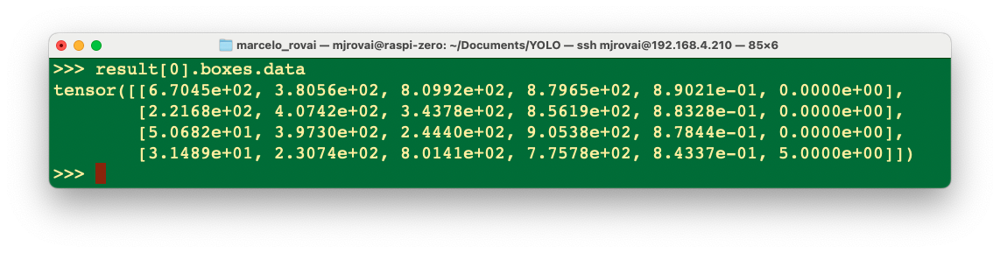
Possiamo accedere a diversi risultati di inferenza separatamente, come il tempo di inferenza, e stamparli in un formato migliore:
inference_time = int(result[0].speed['inference'])
print(f"Inference Time: {inference_time} ms")Oppure possiamo avere il numero totale di oggetti rilevati:
print(f'Number of objects: {len (result[0].boxes.cls)}')
Con Python, possiamo creare un output dettagliato che soddisfi le nostre esigenze (vedere Model Prediction with Ultralytics YOLO per maggiori dettagli). Eseguiamo uno script Python invece di inserirlo manualmente riga per riga nell’interprete, come mostrato di seguito. Usiamo nano come editor di testo. Per prima cosa, dovremmo creare uno script Python vuoto denominato, ad esempio, yolov8_tests.py:
nano yolov8_tests.pySi inseriscono le righe di codice:
from ultralytics import YOLO
# Load the YOLOv8 model
model = YOLO('yolov8n_ncnn_model')
# Run inference
img = 'bus.jpg'
result = model.predict(img, save=False, imgsz=640, conf=0.5, iou=0.3)
# print the results
inference_time = int(result[0].speed['inference'])
print(f"Inference Time: {inference_time} ms")
print(f'Number of objects: {len (result[0].boxes.cls)}')E si inseriscono i comandi: [CTRL+O] + [INVIO] +[CTRL+X] per salvare lo script Python.
Eseguire lo script:
python yolov8_tests.pyIl risultato è lo stesso dell’esecuzione dell’inferenza a livello di terminale (CLI) e con l’interprete Python nativo.
Chiamare la libreria YOLO e caricare il modello per l’inferenza per la prima volta richiede molto tempo, ma le inferenze successive saranno molto più veloci. Ad esempio, la prima singola inferenza può richiedere diversi secondi, ma in seguito il tempo di inferenza dovrebbe essere ridotto a meno di 1 secondo.
Addestramento di YOLOv8 su un Dataset Personalizzato
Torniamo al nostro set di dati “Boxe versus Wheel”, etichettato su Roboflow. Nell’opzione Download Dataset, invece dell’opzione Download a zip to computer eseguita per l’addestramento su Edge Impulse Studio, opteremo per Show download code. Questa opzione aprirà una finestra pop-up con un frammento di codice che dovrebbe essere incollato nel nostro notebook di training.

Per l’addestramento, adattiamo uno degli esempi pubblici disponibili da Ultralitytics ed eseguiamolo su Google Colab. Di seguito, si può trovare il mio da adattare al progetto:
- YOLOv8 Box versus Wheel Dataset Training [Open In Colab]
Punti critici sul Notebook:
Eseguirlo con GPU (NVidia T4 è gratuito)
Installare Ultralytics tramite PIP.

Ora, si può importare YOLO e caricare il dataset sul CoLab, incollando il codice di download che riceviamo da Roboflow. Notare che il dataset verrà montato in
/content/datasets/:

- È essenziale verificare e modificare il file
data.yamlcon il path corretto per le immagini (copiare il percorso su ogni cartellaimages).
names:
- box
- wheel
nc: 2
roboflow:
license: CC BY 4.0
project: box-versus-wheel-auto-dataset
url: https://universe.roboflow.com/marcelo-rovai-riila/box-versus-wheel-auto-dataset/dataset/5
version: 5
workspace: marcelo-rovai-riila
test: /content/datasets/Box-versus-Wheel-auto-dataset-5/test/images
train: /content/datasets/Box-versus-Wheel-auto-dataset-5/train/images
val: /content/datasets/Box-versus-Wheel-auto-dataset-5/valid/imagesDefinire i principali iperparametri da modificare rispetto ai valori di default, ad esempio:
MODEL = 'yolov8n.pt' IMG_SIZE = 640 EPOCHS = 25 # For a final project, you should consider at least 100 epochsEseguire il training (utilizzando la CLI):
!yolo task=detect mode=train model={MODEL} data={dataset.location}/data.yaml epochs={EPOCHS} imgsz={IMG_SIZE} plots=True
image-20240910111319804 L’addestramento del modello ha richiesto alcuni minuti e ha prodotto risultati eccellenti (mAP50 pari a 0,995). Al termine del training, tutti i risultati vengono salvati nella cartella elencata, ad esempio:
/runs/detect/train/. Lì si trova, ad esempio, la matrice di confusione.

- Notare che il modello addestrato (
best.pt) viene salvato nella cartella/runs/detect/train/weights/. Ora, si deve convalidare il modello addestrato convalid/images.
!yolo task=detect mode=val model={HOME}/runs/detect/train/weights/best.pt data={dataset.location}/data.yamlI risultati erano simili al training.- Ora, si deve eseguire l’inferenza sulle immagini lasciate a parte per il test
!yolo task=detect mode=predict model={HOME}/runs/detect/train/weights/best.pt conf=0.25 source={dataset.location}/test/images save=TrueI risultati dell’inferenza vengono salvati nella cartella runs/detect/predict. Vediamone alcuni:
Si consiglia di esportare i risultati di train, validation e test per un Drive su Google. Per farlo, si deve montare l’unità.
from google.colab import drive drive.mount('/content/gdrive')e copiare il contenuto della cartella
/runsin una cartella che si deve creare nel Drive, ad esempio:!scp -r /content/runs '/content/gdrive/MyDrive/10_UNIFEI/Box_vs_Wheel_Project'
Inferenza col modello addestrato, usando Raspi
Scaricare il modello addestrato /runs/detect/train/weights/best.pt nel computer. Utilizzando l’FTP FileZilla, trasferiamo best.pt nella cartella dei modelli Raspi (prima del trasferimento, si può cambiare il nome del modello, ad esempio, box_wheel_320_yolo.pt).
Con FileZilla FTP, trasferiamo alcune immagini dal set di dati di prova a .\YOLO\images:
Torniamo alla cartella YOLO e utilizziamo l’interprete Python:
cd ..
pythonCome prima, importeremo la libreria YOLO e definiremo il nostro modello convertito per rilevare le api:
from ultralytics import YOLO
model = YOLO('./models/box_wheel_320_yolo.pt')Ora, definiamo un’immagine e chiamiamo l’inferenza (stavolta salveremo il risultato dell’immagine per la verifica esterna):
img = './images/1_box_1_wheel.jpg'
result = model.predict(img, save=True, imgsz=320, conf=0.5, iou=0.3)Ripetiamo per diverse immagini. Il risultato dell’inferenza viene salvato sulla variabile result e l’immagine elaborata su runs/detect/predict8
Con FileZilla FTP, possiamo inviare il risultato dell’inferenza al Desktop per la verifica:

Possiamo vedere che il risultato dell’inferenza è eccellente! Il modello è stato addestrato in base al modello base più piccolo della famiglia YOLOv8 (YOLOv8n). Il problema è la latenza, circa 1 secondo (o 1 FPS su Raspi-Zero). Naturalmente, possiamo ridurre questa latenza e convertire il modello in TFLite o NCNN.
Rilevamento di Oggetti su un Live Streaming
Tutti i modelli esplorati in questo laboratorio possono rilevare oggetti in tempo reale utilizzando una telecamera. L’immagine catturata dovrebbe essere l’input per il modello addestrato e convertito. Per Raspi-4 o 5 con un desktop, OpenCV può catturare i frame e visualizzare il risultato dell’inferenza.
Tuttavia, è anche possibile creare un live streaming con una webcam per rilevare oggetti in tempo reale. Ad esempio, iniziamo con lo script sviluppato per l’app Image Classification e adattiamolo per un’Applicazione Web di Rilevamento di Oggetti in Tempo Reale Utilizzando TensorFlow Lite e Flask.
Questa versione dell’app funzionerà per tutti i modelli TFLite. Verificare che il modello sia nella cartella corretta, ad esempio:
model_path = "./models/ssd-mobilenet-v1-tflite-default-v1.tflite"Scaricare lo script Python object_detection_app.py da GitHub.
E sul terminale, si esegue:
python3 object_detection_app.pyE accedere all’interfaccia web:
- Sul Raspberry Pi stesso (se si ha una GUI): si apre un browser web e si va su
http://localhost:5000 - Da un altro dispositivo sulla stessa rete: aprire un browser web e andare su
http://<raspberry_pi_ip>:5000(Sostituire<raspberry_pi_ip>con l’indirizzo IP del Raspberry Pi). Per esempio:http://192.168.4.210:5000/
Ecco alcuni screenshot dell’app in esecuzione su un desktop esterno

Diamo un’occhiata a una descrizione tecnica dei moduli chiave utilizzati nell’applicazione di rilevamento degli oggetti:
- TensorFlow Lite (tflite_runtime):
- Scopo: Inferenza efficiente di modelli di machine learning su dispositivi edge.
- Perché: TFLite offre dimensioni ridotte del modello e prestazioni ottimizzate rispetto a TensorFlow completo, il che è fondamentale per dispositivi con risorse limitate come Raspberry Pi. Supporta l’accelerazione hardware e la quantizzazione, migliorando ulteriormente l’efficienza.
- Funzioni chiave:
Interpreterper caricare ed eseguire il modello,get_input_details()eget_output_details()per l’interfaccia col modello.
- Flask:
- Scopo: Framework web leggero per la creazione del server backend.
- Perché: La semplicità e la flessibilità di Flask lo rendono ideale per lo sviluppo e la distribuzione rapidi di applicazioni web. Richiede meno risorse rispetto a framework più grandi, adatto a dispositivi edge.
- Componenti chiave: decoratori di route per definire endpoint API, oggetti
Responseper lo streaming video,render_template_stringper servire HTML dinamico.
- Picamera2:
- Scopo: Interfaccia con il modulo fotocamera Raspberry Pi.
- Perché: Picamera2 è la libreria più recente per il controllo delle fotocamere Raspberry Pi, che offre prestazioni e funzionalità migliorate rispetto alla libreria Picamera originale.
- Funzioni chiave:
create_preview_configuration()per impostare la fotocamera,capture_file()per catturare i fotogrammi.
- PIL (Python Imaging Library):
- Scopo: Elaborazione e manipolazione delle immagini.
- Perché: PIL fornisce un’ampia gamma di funzionalità di elaborazione delle immagini. Viene utilizzato qui per ridimensionare le immagini, disegnare riquadri di delimitazione e convertire tra formati di immagine.
- Classi chiave:
Imageper caricare e manipolare immagini,ImageDrawper disegnare forme e testo sulle immagini.
- NumPy:
- Scopo: Operazioni array efficienti e calcolo numerico.
- Perché: le operazioni su array di NumPy sono molto più veloci delle liste Python pure, il che è fondamentale per elaborare in modo efficiente i dati delle immagini e gli input/output del modello.
- Funzioni chiave:
array()per creare array,expand_dims()per aggiungere dimensioni agli array.
- Threading:
- Scopo: Esecuzione simultanea di attività.
- Perché: Il threading consente l’acquisizione simultanea di frame, il rilevamento di oggetti e il funzionamento del server Web, cruciali per il mantenimento delle prestazioni in tempo reale.
- Componenti chiave: La classe
Threadcrea thread di esecuzione separati e Lock viene utilizzato per la sincronizzazione dei thread.
- io.BytesIO:
- Scopo: Stream binari in memoria.
- Perché: Consente una gestione efficiente dei dati delle immagini in memoria senza bisogno di file temporanei, migliorando la velocità e riducendo le operazioni di I/O.
- time:
- Scopo: Funzioni correlate al tempo.
- Perché: Utilizzato per aggiungere ritardi (
time.sleep()) per controllare la frequenza dei fotogrammi e per le misure delle prestazioni.
- jQuery (client-side):
- Scopo: Manipolazione DOM semplificata e richieste AJAX.
- Perché: Semplifica l’aggiornamento dinamico dell’interfaccia web e la comunicazione con il server senza ricaricamenti di pagina.
- Funzioni chiave:
.get()e.post()per richieste AJAX, metodi di manipolazione DOM per l’aggiornamento dell’interfaccia utente.
Per quanto riguarda l’architettura del sistema dell’app principale:
- Main Thread: Esegue il server Flask, gestisce le richieste HTTP e serve l’interfaccia web.
- Camera Thread: Cattura continuamente i frame dalla fotocamera.
- Detection Thread: Elabora i frame tramite il modello TFLite per il rilevamento degli oggetti.
- Frame Buffer: Spazio di memoria condiviso (protetto da blocchi) che memorizza i frame più recenti e i risultati del rilevamento.
E il flusso di dati dell’app, possiamo descriverlo in breve:
- La fotocamera cattura il frame → Frame Buffer
- Il thread di rilevamento legge dal Frame Buffer → Elabora tramite il modello TFLite → Aggiorna i risultati del rilevamento nel Frame Buffer
- Flask indirizza l’accesso al Frame Buffer per fornire i risultati più recenti del frame e del rilevamento
- Il client Web riceve gli aggiornamenti tramite AJAX e aggiorna l’interfaccia utente
Questa architettura consente un rilevamento efficiente degli oggetti in tempo reale, mantenendo al contempo un’interfaccia Web reattiva in esecuzione su un dispositivo edge con risorse limitate come un Raspberry Pi. Il threading e le librerie efficienti come TFLite e PIL consentono al sistema di elaborare i frame video in tempo reale, mentre Flask e jQuery forniscono un modo intuitivo per interagire con essi.
Si può testare l’app con un altro modello pre-elaborato, come EfficientDet, modificando la riga dell’app:
model_path = "./models/lite-model_efficientdet_lite0_detection_metadata_1.tflite"Per usare l’app per il modello SSD-MobileNetV2, addestrato su Edge Impulse Studio con il set di dati “Box versus Wheel”, il codice dovrebbe essere adattato anche in base ai dettagli di input, come abbiamo esplorato sul suo notebook.
Conclusione
Questo laboratorio ha esplorato l’implementazione del rilevamento di oggetti su dispositivi edge come Raspberry Pi, dimostrando la potenza e il potenziale dell’esecuzione di attività avanzate di computer vision su hardware con risorse limitate. Abbiamo trattato diversi aspetti essenziali:
Confronto tra Modelli: Abbiamo esaminato diversi modelli di rilevamento oggetti, tra cui SSD-MobileNet, EfficientDet, FOMO e YOLO, confrontandone le prestazioni e i compromessi sui dispositivi edge.
Training e Deployment: Utilizzando un set di dati personalizzato di scatole e ruote (etichettato su Roboflow), abbiamo esaminato il processo di addestramento dei modelli utilizzando Edge Impulse Studio e Ultralytics e la loro distribuzione su Raspberry Pi.
Tecniche di Ottimizzazione: Per migliorare la velocità di inferenza sui dispositivi edge, abbiamo esplorato vari metodi di ottimizzazione, come la quantizzazione del modello (TFLite int8) e la conversione del formato (ad esempio, in NCNN).
Applicazioni in Tempo Reale: Il laboratorio ha esemplificato un’applicazione Web di rilevamento oggetti in tempo reale, dimostrando come questi modelli possono essere integrati in sistemi pratici e interattivi.
Considerazioni sulle Prestazioni: Durante il laboratorio abbiamo discusso l’equilibrio tra accuratezza del modello e velocità di inferenza, un aspetto fondamentale per le applicazioni di IA edge.
La capacità di eseguire il rilevamento di oggetti su dispositivi edge apre numerose possibilità in vari ambiti, dall’agricoltura di precisione, all’automazione industriale e al controllo di qualità, alle applicazioni per la casa intelligente e al monitoraggio ambientale. Elaborando i dati localmente, questi sistemi possono offrire latenza ridotta, privacy migliorata e funzionamento in ambienti con connettività limitata.
Guardando al futuro, le potenziali aree di ulteriore esplorazione includono: - Implementazione di pipeline multi-modello per attività più complesse - Esplorazione di opzioni di accelerazione hardware per Raspberry Pi - Integrazione del rilevamento di oggetti con altri sensori per sistemi AI edge più completi - Sviluppo di soluzioni edge-to-cloud che sfruttano sia l’elaborazione locale che le risorse cloud
Il rilevamento di oggetti su dispositivi edge può creare sistemi intelligenti e reattivi che portano la potenza dell’IA direttamente nel mondo fisico, aprendo nuove frontiere nel modo in cui interagiamo e comprendiamo il nostro ambiente.